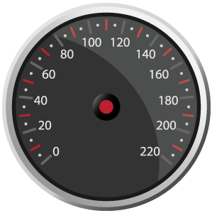

<!DOCTYPE html>
<html>
<head>
	<meta charset="utf-8">
	<title>动画 : CSS3 Transition</title>
	<script type="text/javascript" src="js/react.min.js" ></script>
	<script type="text/javascript" src="js/JSXTransformer.js" ></script>
	<script type="text/javascript" src="js/jquery-1.11.0.js" ></script>
	<!--组件样式-->
	<style>
		.ez-gauge{
			position:relative;
			display:inline-block;
		}
		.ez-gauge .pointer{
			position : absolute;
			left : 149px;
			top : 104px;
			transform-origin : 1px 45px;
			transition : transform 2s;
		}
	</style>
</head>
<body>
	<div id="content"></div>
	<script type = "text/jsx">
		//组件定义
		var EzGaugeComp = React.createClass({
			//声明初始状态
			getInitialState : function(){
				return {
					value : 0, 			//速度值
					mounted : false    //是否已挂接到DOM
				};
			},
			//首次渲染后改变状态
			componentDidMount : function(){
				this.setState({mounted : true});
			},
			//校验属性值，无效时不刷新界面
			shouldComponentUpdate : function(nextProps,nextState){
				if(nextProps.value > 220 || nextProps.value<0) return false;
				return true;
			},
			render : function(){
				//速度为0时的旋转角度
				var degree = -201;
				//根据属性值计算旋转角度
				if(this.state.mounted){
					degree = (this.props.value / 220) * 265 - 201;
					//确保之前设置的样式生效
					window.getComputedStyle(React.findDOMNode(this.refs.ptr)).transform;
				}
				//表针样式
				var style={
					transform : "rotate("+degree+"deg)"
				};
				return (
					<div className="ez-gauge">
						
						
					</div>
				);
			}
		});
		//渲染
		React.render(
			<EzGaugeComp  value="200"/>,
			document.querySelector("#content"));
	</script>
</body>
</html>
<!--
	在React中可以使用CSS3 Transition为组件增加过渡效果。不过，由于 CSS3 Transition需要DOM属性的变化才能触发，所以我们需要将属性改变后的React 元素重新渲染到真实DOM上，才可以触发过渡效果。

大致来讲，在React中使用CSS3 Transition有以下步骤：

为元素声明transition样式
设置属性初始值，第一次渲染元素
设置属性目标值，第二次渲染元素
在示例代码中，为了实现过渡效果，我们使用了一个内部状态mounted 来实现第二次渲染：当初次渲染完成功后，通过setState()方法我们触发 了再次渲染。第二次渲染时，我们重新设置了样式，以便激活过渡过程。

需要注意的一点是window.getComputedStyle()方法的应用，调用 这个方法的目的是刷新DOM的样式，以便确保之前设置的样式已经被应用到DOM 上了。
-->